TECHNICAL SKILLS
OS
Hardware
Programming
Web
Software
Networking
Instruments
PCB Design
CAD
Android 5, iOS 8, BB 10, Mac OS X 10.10, Windows 8, Linux
Arduino Ethernet, Raspberry Pi, BeagleBone Black, IOIO, Netduino
Java, C, C++, C#
HTML5, CSS3, JavaScript, PHP, MySQL
Eclipse, MATLAB, LabVIEW, VMware, MS Visual Studio / Office
Cisco, HP, D-Link, TP-Link, Wireless LAN
Oscilloscope (Fluke, Tektronix), Spectrum Analyzer (IFR/Aeroflex)
Multisim, Ultiboard, CircuitCAM
Inventor, SolidWorks, CATIA V5, AutoCAD
PROJECTS
Telepresence Robots - Raspberry Pi, Android
Internet of Things - Servo Control, Temperature Display (web apps)
Gadgets websites
EDUCATION
Bitmaker Labs, Toronto, Ontario, Canada
Front-End Web Development (Responsive Web Design, jQuery, animation, Git), 2015
Ryerson University, Toronto, Ontario, Canada
Advanced JavaScript (regular expressions, DOM scripting, slideshow), 2014
HTML5 (Canvas, SVG, Geolocation, WebSocket, Drag and Drop, Storage), 2014
JavaScript (functions, objects, timers, cookies, DOM, AJAX), 2013
PHP and MySQL (server-side web technology, LAMP stack, database), 2013
Java Advanced (graphics, multi-threading, database, sockets), 2013
Java (object oriented programming, Inheritance, Polymorphism), 2012
HTML and CSS (client-side web technology, forms, tables, images, video), 2012
Centennial College, Scarborough, Ontario, Canada
Mobile Applications Development and Testing, 2012 - 2013
- Android apps (event handling, SQLite, Google Map, GPS)
Centennial College, Scarborough, Ontario, Canada
Advanced Diploma - Computer Engineering Technology, 2010 - 2012
- Wireless Technology, Network Design, Data Communications, Database
- Digital Signal Processing, System-on-Chip, Real Time Operating Systems
McMaster University, Hamilton, Ontario, Canada
B.ENG. - Mechanical Engineering, 1992
PROFESSIONAL EXPERIENCE
Rangle, Toronto, Ontario, Canada
QA Analyst
Jan 2015 – Mar 2015
Responsible for testing web apps on mobile phones, tablets and computers.
- Performed OS tests – iOS 8.2, Android 5.0, Mac OS X Yosemite, Windows 8.1
- Performed browser tests – Chrome 41, Firefox 36, Safari 8, IE 11
- Utilized agile project management software – Pivotal Tracker
Contributed to the following projects: Shape Security, Surex, Kagen, ThyssenKrupp
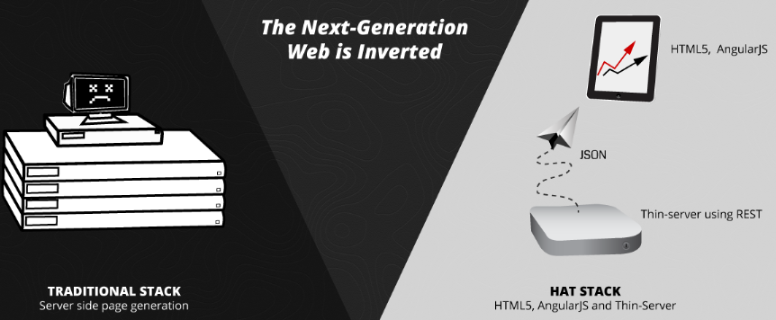
 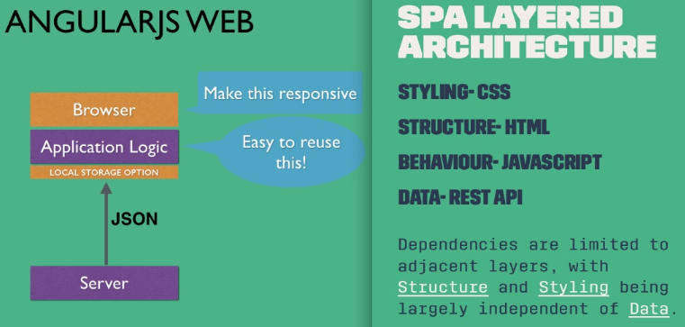
Courtesy of Rangle
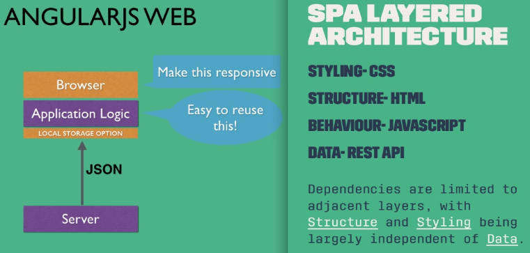
Courtesy of Rangle
Field Aviation East Ltd., Mississauga, Ontario, Canada
CAD Designer
Jun 2005 – Jan 2009
Responsible for computer aided design of aircraft components.
- Designed aluminum alloy sheet metal structures.
- Generated solid models and drawings utilizing Autodesk Inventor and AutoCAD.
- Worked on Bombardier Q300 turboprop aircraft.
Contributed to the following projects: US/Sweden/Australia/Japan/Iceland Coast Guard
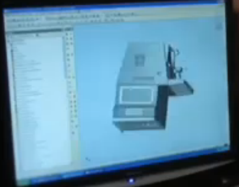
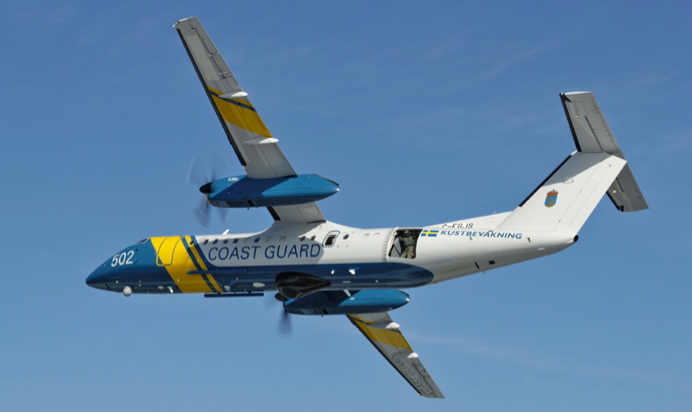
Courtesy of Field Aviation
Universal Instruments Corp., Binghamton, New York, U.S.A.
Applications Engineer
Apr 2000 - Dec 2001
Responsible for engineering development and international customer projects.
- Applied Design of Experiments (DOE) technique to optimize speed and accuracy.
- Performed statistical analysis utilizing Minitab software.
- Developed optimum placement programs and test procedures for IPC-9850.
- Utilized CMM and glass board/components to verify placement accuracy.
- Supported customers in U.S.A. (IBM), Mexico (Motorola) and China (Huawei).
Contributed to the following products: Universal GSM placement machines
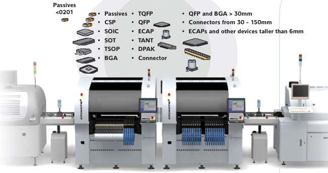
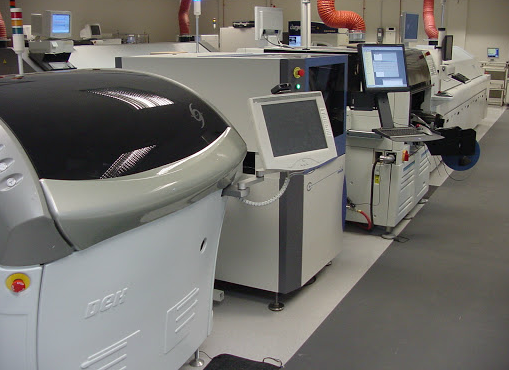
Courtesy of Universal Instruments
Qualcomm Inc., San Diego, California, U.S.A.
SMT Engineer
Jan 1998 – Aug 1999
Responsible for machine program optimization, line balancing and prototype builds.
- Applied Statistical Process Control (SPC) technique to monitor component placement precision and accuracy (Cp, CpK).
- Completed Six Sigma Green Belt training.
- Investigated 0603 capacitor bulk feeders and 0201 capacitor placement.
- Worked on MPM printers, Panasonic MV / MPA mounters, Philips FCM / Topaz mounters and MVT inspection machines.
Contributed to the following products: Qualcomm and Sony mobile phones
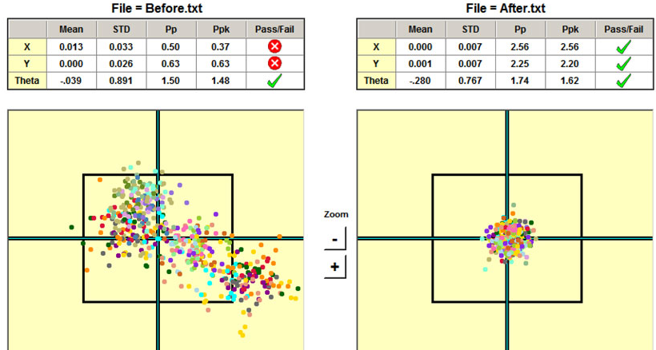
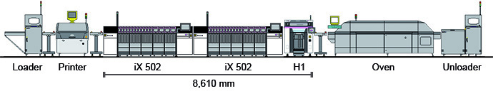
Courtesy of Panasonic and Philips-Assembleon
SMTC, Markham, Ontario, Canada
Programmer
Jul 1993 – Dec 1997
Responsible for machine program generation and troubleshooting six SMT lines.
- Developed a comprehensive library of placement machine vision codes.
- Generated machine placement codes from printed circuit board data utilizing PanaPro and Panatools software.
- Worked on MPM printers and Panasonic MV / MPA mounters.
Contributed to the following projects: Telxon (RF), ATI (graphics), Celestica (SIMM)
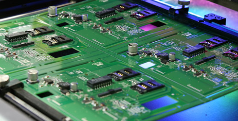
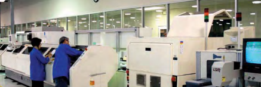
Courtesy of SMTC